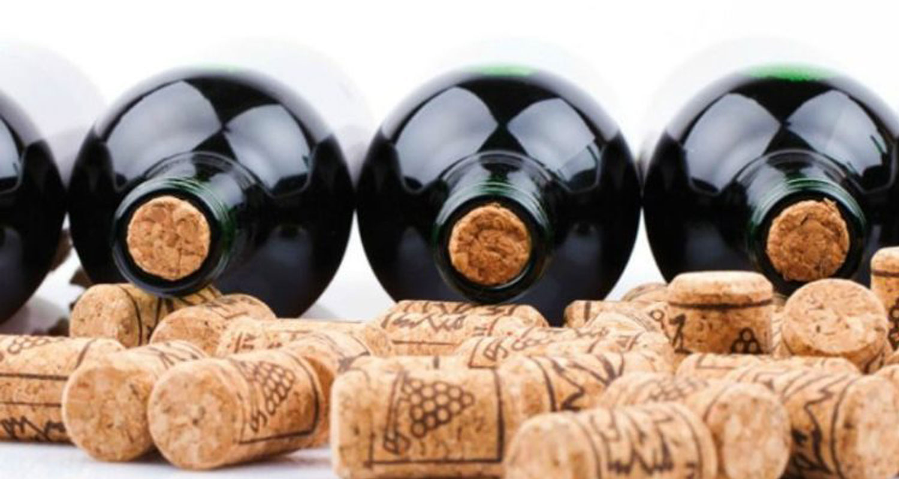
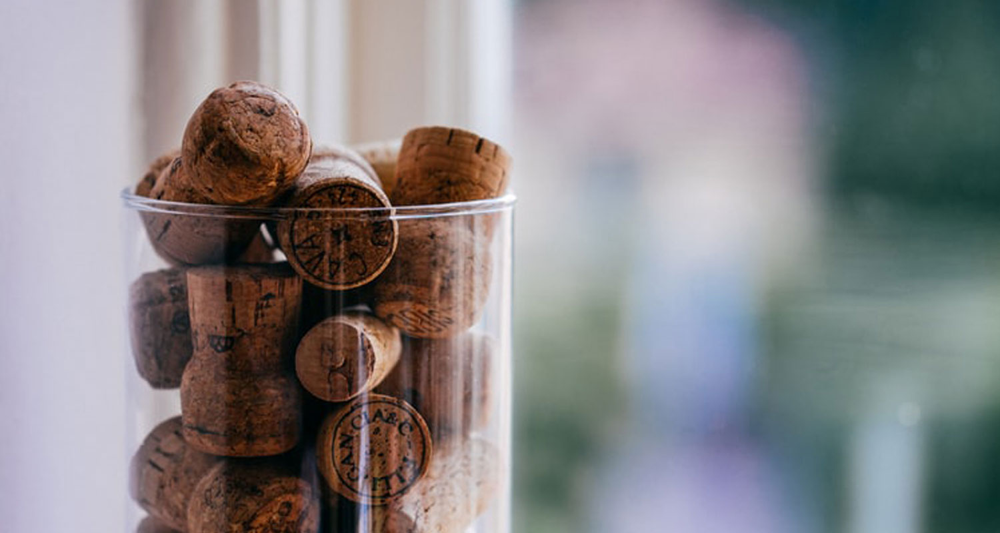
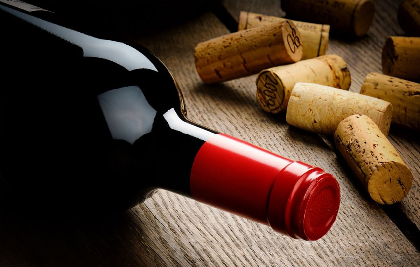

Cork - Luxury wine or coward wine?
Many people equate the quality of a wine bottle with a cork on its neck, or a cork with a cork that tastes better than a metal cork. Of course this is becoming obsolete today.
Wine corks are usually divided into two main types: wooden corks (mainly from oak, also called cork) and twisted corks (made from light metal).
The public not only told each other how to distinguish good and bad wine through wine labels, wine flavors, but also through the stopper on the neck of the bottle. Many people believe that fine wine must have cork, the lower "grade" of course uses metal twists. Of course, the judgment on the ears of the wine connoisseur is not right.
Cork and sacred wine opening ritual
Anything romantic like love or religion doesn't exist for a decade, but for decades. When dining at a high-class restaurant, the French often consider the "cork-opening ceremony" to be the obvious. "The opening of the wine at the table implies a romantic ritual. If the guests are well served and agree to pay a premium for premium wine, they often want someone else to open the wine for themselves."

The story of how to open the wine
In 1998, Canadian wine expert David Hojnoski introduced Kwik-Kork, a type of wine opener without using a traditional wine opener. The drinker simply punches a small hole in the cork lid and inserts a piece of plastic into it. This piece of plastic adheres to another device located outside the neck of the bottle; With just a slight jerk, the stopper of wine was popped out. The famous Kwik-Kork is useful from the moment it was born. Family members drinking wine, going on picnics or parties, all use this technique to open wine. Some magazines specialize in praising the invention of the Canadian expert.
However, one of the leading wine experts in France at the time, Mr. Alain Segelle did not appreciate Kwik-Kork. "For me, it is just a wine opener," said the director of the French Center for Information, Data and Testing.
To be frank, opening a wine like that means a lack of respect for the bottle itself. Bottle of perennial wine.
Million dollar oak buttons
For centuries, cork produced from Mediterranean oak forests have been selected as corks for more than 70% of bottles of wine worldwide.
The oak tree itself has to wait for more than 25 years to harvest the bark. When the Quercus Suber oaks reaches 14 years of age, the farmer will peel the bark for the first time - the bark is discarded, not used in the wine industry. By 12 years later, the oak bark is peeled a second time, this type of oak bark can be used.

This type of oak bark is left to dry for 2 years, and then soaked with Chloe mixed with boiling water to kill bacteria. In the end, the finished shells were polished and suddenly turned into corks as we often see them. An oak tree can give 13 to 18 harvests of bark in its lifetime.
The advantages and the sacredness of the cork are well known; but the downside about unpleasant wine stoppers (caused by cork) is that only wine connoisseurs will realize.
According to a cork scent study in the Bordeaux region (France), 2 - 3% of cork wines have an unpleasant smell, which is equivalent to about 15 million bottles of cork in Bordeaux annually.
Wines have a lot of imperfections, such as the smell of plants, the smell of apples, alcohol, salt, sulfur, earth, rotten eggs, etc. minutes to about 15-20 minutes after opening the bottle, the smell of the cork can never be lost, even if the bottle is left open for hours.
The unpleasant cork aroma is a result of the combination of chlorine, mushrooms and the wine flavor in the bottle. TCA (Trichloroanisole) - a chemical that causes an unpleasant odor in wine, often appearing in broken cork stoppers. It was the loose management and standard framework in the cork production that made the number of corked wines significantly increase in the 1970s.
However, countries that value cork production, such as Portugal, Spain and Cork Quality Assurance Council (CQC), have found solutions to the problem of cork odor. The set of standards for planting oak, harvesting and making cork in every traditional cork production area is being closely monitored. The unpleasant smell from a wine stopper is no longer a serious problem.
In recent years, cork and oak have become a vital issue for Spanish and Portuguese farmers as both countries are striving to maintain the traditional cork production industry before the increase. Quick type of screwdriver.
The crown of the crown
Bill Stephens, a famous wine critic, once said, "The cork is better to return to its birthplace, to the ancient times of oak trees." Mr. Bill said that the cork will "die and die", unable to compete with other types of wine made from other materials.

Unlike the cork from the 5th century BC, the new spin button appeared in 1889. By 1926, the spin button was used for spirits and increased rapidly thanks to its convenience and cost. short.
Studies in France in the 1930s to the present have paved the way for the use of a spin button to close wine. By 1959, Le Bouchage Mecanique, a French company, began to replace the spin button for the cork.
In 1973, seven major Australian wine producers collaborated with the Australian Wine Research Institute to experiment with 3,000 bottles of red, white and bottled white cork.
The results showed that the cork keeps the wine quality better thanks to its perfect sealing characteristics, gas adjustment and special, no cork odor (due to the cork is broken). Moreover, the use of wine is also more convenient when you can easily close the bottle when not finished drinking wine.
Between the middle of 1976 and the early 1980s, 20 million bottles of Australian wine were capped. Together with Australia, Switzerland is the first country in Europe to adopt this technology extensively. Next, New Zealand, USA, France, Germany, Chile. Now more and more countries and winemakers are turning to spin buttons.
Inferable: A good bottle of wine is judged based on many factors about the winery's production, grape season, grape type, brewing method, aroma and taste of the wine. The cork on the neck of the bottle is the classic and alluring wine, but it has its own pros and cons. Unless you are a wine expert, the button material won't affect the feel and quality of the wine.